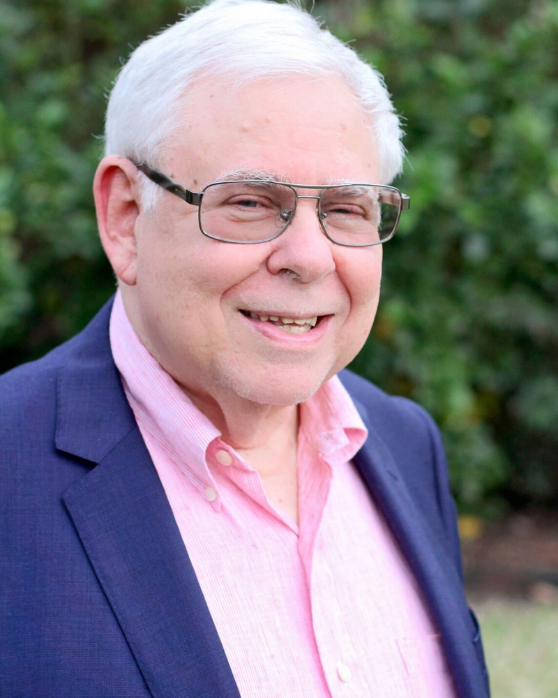
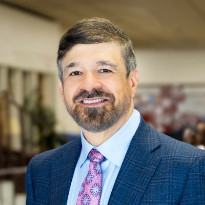
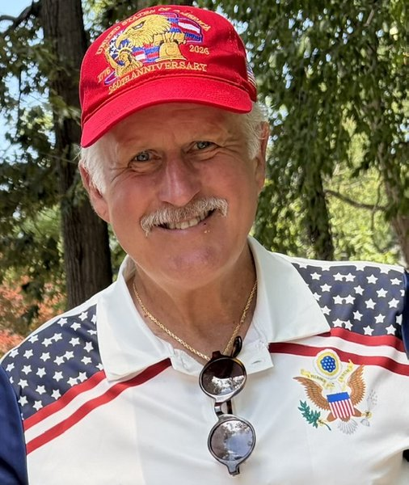
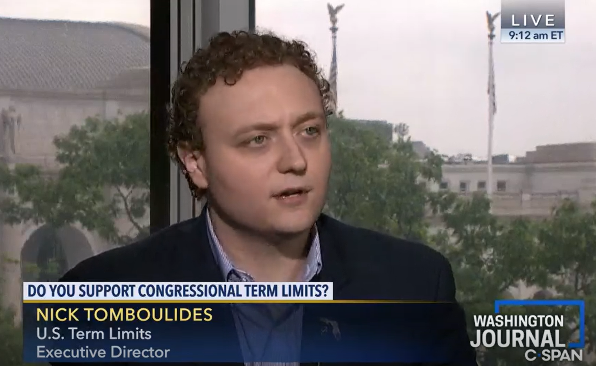
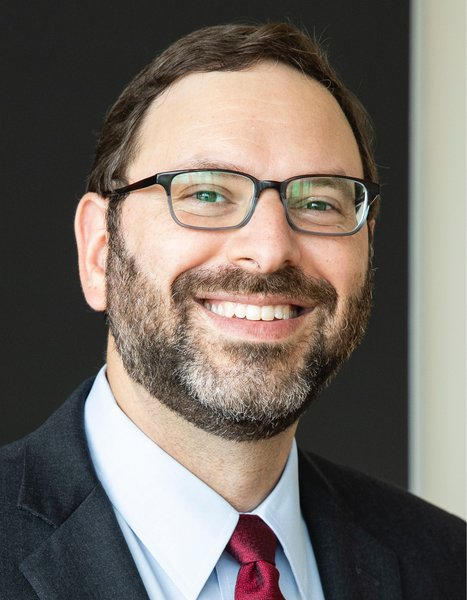
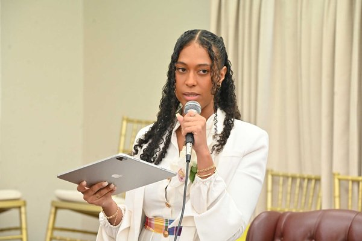
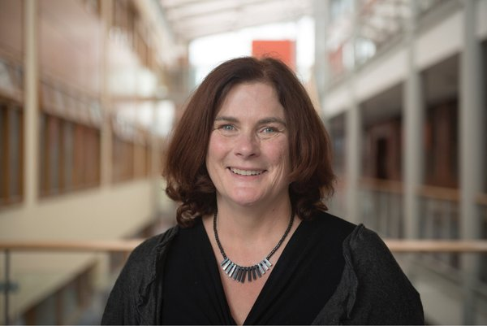
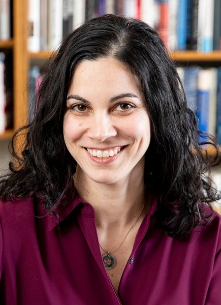
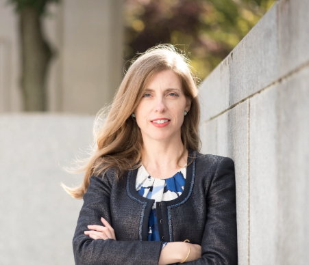
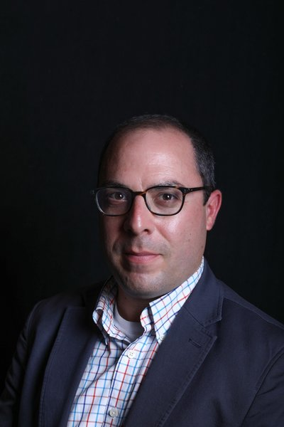

Panels & Panelists
A keynote and five panels spanning the history, proposals, risks, models, and future of the Article V convention. Click any name to read the full bio, or see the full schedule.
Keynote · Friday, October 2 · 5:15 – 6:00 PM
Keynote Speech
Professor Lawrence Lessig will open the conference with introductory remarks at 5:00 PM, followed by the keynote address.
 Jill LeporeKeynote
David Woods Kemper '41 Professor of American History, Harvard University · Staff writer, The New Yorker
Jill LeporeKeynote
David Woods Kemper '41 Professor of American History, Harvard University · Staff writer, The New Yorker
Jill Lepore is the David Woods Kemper '41 Professor of American History at Harvard University, Professor of Law at Harvard Law School, and an author with The New Yorker. Her most recent book, We the People: A History of the U.S. Constitution (Liveright, 2025), a New York Times bestseller, takes as its subject the question at the heart of Article V: what it means to live under one of the world's oldest and least-amended constitutions. She also directs Amend, a public archive of proposed amendments to the U.S. Constitution, documenting the thousands of changes Americans have sought and never secured. Her other books include the international bestseller These Truths: A History of the United States (2018) and The Deadline (2023), winner of the PEN prize for the Art of the Essay. A two-time Pulitzer finalist and winner of the Bancroft Prize, she holds a Ph.D. in American Studies from Yale.
Panel I · Saturday, October 3 · 9:30 – 10:45 AM
ORIGINS: The History and Traditions of Article V

Sanford Levinson
Garwood Centennial Chair in Law, University of Texas at Austin
Sanford Levinson holds the W. St. John Garwood and W. St. John Garwood Jr. Centennial Chair in Law at the University of Texas at Austin, where he is also Professor of Government. He has been a regular visiting professor at Harvard Law School, most recently teaching a course on amending the Constitution by convention. He is among the nation's most prominent advocates of a new constitutional convention. Across Our Undemocratic Constitution (2006), Framed: America's 51 Constitutions and the Crisis of Governance (2012), and Fault Lines in the Constitution (with Cynthia Levinson, 3rd ed. 2025), he has argued that Article V is the Constitution's central defect — rendering the document effectively unamendable and, worse, foreclosing serious public debate about reform. He contributed to the National Constitution Center's 2025 Article V project and is a regular contributor to Balkinization. Elected to the American Academy of Arts and Sciences in 2001.

Michael Rappaport
Darling Foundation Professor of Law, University of San Diego School of Law
Michael B. Rappaport is the Hugh and Hazel Darling Foundation Professor of Law and Director of the Center for the Study of Constitutional Originalism at the University of San Diego School of Law, where he serves as 2025–2026 University Professor. He is a leading originalist scholar of the amendment process. In "Reforming Article V: The Problems Created by the National Convention Amendment Method and How to Fix Them" (Virginia Law Review, 2010) and "The Constitutionality of a Limited Convention: An Originalist Analysis" (Constitutional Commentary, 2012), he argues that the Constitution's original meaning permits states to apply for a convention limited to a single subject — and that a "runaway" convention would therefore be unconstitutional, its products legal nullities. He authored the Article V essay for the National Constitution Center's Interactive Constitution and contributed to its 2025 Article V project. With John McGinnis, he co-authored Originalism and the Good Constitution (Harvard, 2013). J.D. and D.C.L., Yale.
 Farah Peterson
Professor of Law, University of Chicago Law School
Farah Peterson
Professor of Law, University of Chicago Law School
Farah Peterson is a Professor of Law at the University of Chicago Law School and a legal historian of the early American republic. Her scholarship on constitutional and statutory interpretation has appeared in the Yale Law Journal, Columbia Law Review, and Virginia Law Review, and argues that the flexible, purposive approach to reading the Constitution so often set against originalism was in fact the founding generation's own. That work speaks directly to the Article V question of when constitutional change must come through formal amendment and when it can come through interpretation. She is a member of the Brennan Center's Historians Council on the Constitution and a trustee of the Supreme Court Historical Society. An award-winning essayist as well as a scholar, she won a Pushcart Prize for "Alone with Kindred." She clerked for Justice Stephen Breyer and Judge Guido Calabresi. J.D. Yale; Ph.D. in history, Princeton.
 Richard ReModerator
Professor of Law, Harvard Law School
Richard ReModerator
Professor of Law, Harvard Law School
Richard M. Re is a Professor of Law at Harvard Law School, where he teaches and writes on constitutional law, federal courts, and criminal procedure. He joined Harvard in 2025 from the University of Virginia, where he held the Elizabeth D. and Richard A. Merrill Professorship, and previously taught at UCLA. Much of his scholarship bears on how constitutional law changes and who gets to change it: in "Promising the Constitution" (Northwestern University Law Review), he argues that the constitutional oath binds officials to the document as it stands, with Article V supplying the recognized "change rule" that legitimates departures from it. Related work — including "Personal Precedent at the Supreme Court" (Harvard Law Review) — examines judicial revision as an informal alternative to formal amendment. Re clerked for Judge Brett Kavanaugh and Justice Anthony Kennedy and served in the Justice Department. A.B. Harvard; M.Phil. Cambridge; J.D. Yale.
Panel II · Saturday, October 3 · 11:15 AM – 12:30 PM
THE GRAND BARGAIN: Substantive Amendment Proposals
The team is speaking with an additional potential panelist.

David Walker
Former Comptroller General of the United States
Dave is a nationally and internationally recognized fiscal responsibility, government transformation/ accountability, and retirement security expert. He is a non-practicing CPA with over 40 years of top executive level experience, including heading three federal agencies (two ERISA agencies), four non-profits, and a global service line for Arthur Andersen LLP. His most recent full-time federal position was as the seventh Comptroller General of the United States and CEO of the U.S. Government Accountability Office (GAO) for almost 10 years (1998-2008). This was one of his three Presidential appointments by Presidents from both political parties, with unanimous Senate confirmation each time. He also served as one of two Public Trustees for Social Security and Medicare from (1990-1995).
Dave is currently Chair of the Federal Fiscal Sustainability Foundation and President of We the People. He also serves on several other non-profit boards and advisory committees.
 Jim Rubens
Former New Hampshire State Senator
Jim Rubens
Former New Hampshire State Senator
Jim Rubens has served as a New Hampshire state senator and chair of the New Hampshire GOP platform committee. Jim is Dartmouth College class of 1972. He is a longtime constitutional amending activist and serves on the boards of American Promise and the Federal Fiscal Sustainability Foundation and is war room director for FFSF. He publishes the weekly Substack, Inside Amending.

Nick Tomboulides
CEO, U.S. Term Limits
Nick Tomboulides is CEO of U.S. Term Limits, the nation's largest grassroots term limits organization, which he has led since 2013. In 2017 he directed the launch of the Term Limits Convention, a state-by-state campaign to secure a congressional term limits amendment through the Article V convention route — an effort premised on the argument that Congress will never propose an amendment limiting its own members' tenure, precisely the scenario the Framers anticipated when they wrote the convention method into Article V. He has testified before both the House and Senate Judiciary Committees, and his writing has appeared in USA Today, the Orlando Sentinel, the Daily Signal, and The Fulcrum. He edits the Term Limits national blog and serves as a policy advisor to the Heartland Institute. B.A. in economics, University of Connecticut.
 Guy-Uriel CharlesModerator
Charles J. Ogletree, Jr. Professor of Law, Harvard Law School
Guy-Uriel CharlesModerator
Charles J. Ogletree, Jr. Professor of Law, Harvard Law School
Guy-Uriel E. Charles is the inaugural Charles J. Ogletree, Jr. Professor of Law at Harvard Law School and faculty director of the Charles Hamilton Houston Institute for Race & Justice. He writes about how law mediates political power and how law addresses racial subordination, and teaches election law, constitutional law, race and the law, and civil procedure. His work on the Reconstruction and voting rights amendments — including a forthcoming book with Luis Fuentes-Rohwer on the past and future of the Voting Rights Act — engages a central Article V puzzle: what formal amendments can and cannot accomplish on their own, and why the Fifteenth Amendment required a statute to make it real. Appointed by President Biden to the Presidential Commission on the Supreme Court of the United States, he is a member of the American Academy of Arts & Sciences and the American Law Institute. Previously on the faculties of Duke and Minnesota. J.D. Michigan.
Panel III · Saturday, October 3 · 2:00 – 3:15 PM
THE CASE AGAINST: Risks, Runaway Fears, and the ‘Dead Letter’ View
 Russell Feingold
Former U.S. Senator from Wisconsin
Russell Feingold
Former U.S. Senator from Wisconsin
Russ Feingold is the former President (2020–2025) of the American Constitution Society and co-author of The Constitution in Jeopardy: An Unprecedented Effort to Rewrite Our Fundamental Law and What We Can Do About It (2022), which examines efforts to amend the Constitution through an Article V convention. He served as a U.S. Senator from Wisconsin from 1993 to 2011, where he chaired or served as Ranking Member of the Senate Judiciary Committee's Constitution Subcommittee. During his Senate career, Feingold was known for his commitment to constitutional principles, including his lone vote against the initial USA PATRIOT Act and his leadership on campaign finance reform as co-sponsor of the Bipartisan Campaign Reform Act (McCain-Feingold). He has taught constitutional law and related subjects at Stanford, Yale, Harvard, and Marquette law schools. Feingold holds degrees from the University of Wisconsin–Madison, the University of Oxford (as a Rhodes Scholar), and Harvard Law School.
 Viki Harrison
Policy Director, Common Cause
Viki Harrison
Policy Director, Common Cause
Viki Harrison joined Common Cause in January 2012. She currently serves as the Policy Director on the Civil Rights & Civil Liberties team. Viki leads our work on stopping a dangerous constitutional convention, advancing Supreme Court reform, and protecting our right to free speech in this country.
Before joining Common Cause, she was the Executive Director of NM Repeal, where she led a successful campaign to abolish the death penalty in New Mexico. Earlier in her career, she was the Program Manager for Animal Protection of NM, and part of the team that secured a ban on cockfighting in the state. Harrison graduated summa cum laude from the University of New Mexico with B.A. degrees in Women’s Studies and African American Studies.
David Super Carmack Waterhouse Professor of Law and Economics, Georgetown University Law Center
David A. Super is the Carmack Waterhouse Professor of Law and Economics at Georgetown University Law Center, where he teaches constitutional, legislative, and administrative law. He is among the most prominent legal opponents of an Article V convention. In work including the American Constitution Society issue brief "A Dangerous Adventure: No Safeguards Would Protect Basic Liberties from an Article V Convention," he argues that nothing in Article V empowers Congress or the states to limit a convention's agenda, that courts would likely treat the question as nonjusticiable, and that the 1787 Philadelphia Convention — which discarded the charter that authorized it — is the only precedent we have. He has testified before state legislatures across the country on convention applications and rescission measures, and has debated convention proponents publicly. He has also written extensively on federalism, administrative law, and the social safety net.
Wilfred Codrington III Walter Floersheimer Professor of Constitutional Law, Cardozo School of Law
Wilfred U. Codrington III is the Walter Floersheimer Professor of Constitutional Law and co-director of the Floersheimer Center for Constitutional Democracy at the Benjamin N. Cardozo School of Law, which he joined in 2024 after teaching at Brooklyn Law School. With John Kowal, he is co-author of The People's Constitution: 200 Years, 27 Amendments, and the Promise of a More Perfect Union (The New Press, 2021) — a narrative history of how the amendment process has actually worked and a call for renewed popular engagement with constitutional change, making him one of the few scholars to have written a full-length account of Article V in practice. His scholarship on constitutional law, election law, and voting rights has appeared in the N.Y.U. Law Review and the Columbia Law Review Forum, and he writes frequently for The Atlantic and Slate. Previously the inaugural Bernard and Anne Spitzer Fellow at the Brennan Center for Justice. B.A. Brown; M.P.A. Penn; J.D. Stanford.

Stephen SachsModerator
Antonin Scalia Professor of Law, Harvard Law School
Stephen E. Sachs is the Antonin Scalia Professor of Law at Harvard Law School, where he teaches civil procedure, conflict of laws, federal courts, and seminars on constitutional law and jurisprudence. His research focuses on the law and theory of constitutional interpretation, the history of procedure and private law, and the role of the general common law in the U.S. legal system. Since February 2026, Sachs has served as the Reporter for the Advisory Committee on Appellate Rules of the Judicial Conference of the United States. He is an elected member of the American Law Institute, an adviser to the ALI’s project on the Restatement of the Law (Third), Conflict of Laws, a member of the Board of Directors of the Federalist Society and of the Yale Law Journal, and a founding member of the Academic Freedom Alliance.
Panel IV · Saturday, October 3 · 3:45 – 5:00 PM
BLUEPRINTS: State Conventions and International Models
Katrín Oddsdóttir Human rights lawyer · Chair, Icelandic Constitution Society
Katrín Oddsdóttir is an Icelandic human rights lawyer and chair of the Icelandic Constitution Society. In 2011 she was one of 25 citizens elected to Iceland's Constitutional Council, the body that produced what became known as the world's first crowdsourced constitution — drafted in public, with citizen input gathered through social media, in the aftermath of the 2008 banking collapse and the "Pots and Pans Revolution." In a 2012 national referendum, roughly two-thirds of voters endorsed the draft as the basis for a new constitution; Iceland's parliament has never enacted it, and Katrín has led the campaign for its adoption ever since. Her experience offers a rare working model of citizen-led constitutional drafting for anyone thinking about how an Article V convention might actually be composed, run, and legitimated. She practiced at the Réttur law firm, founded the NGO Réttindi barna (Children's Rights), and lectures in constitutional and refugee law at Reykjavík University.

Imani Daniel
Delegate, Sixth Constitutional Convention of the U.S. Virgin Islands
Imani Daniel is a delegate to the Sixth Constitutional Convention of the U.S. Virgin Islands, where she is helping draft the territory's first constitution around principles of self-determination, sovereignty, and equitable representation — making her one of the few participants in this conference with direct, current experience as a constitutional convention delegate. She is executive director of VIISION Inc. (the Virgin Islands Institute for Social Impact, Opulence, and Noetics), which builds community-driven systems and volunteer networks to advance economic resilience and disaster preparedness across the territory. In the wake of Hurricanes Irma and Maria, she built the EmGar app, which coordinated more than 8,500 volunteer hours and the distribution of disaster relief aid, and she has helped mobilize over $5 million in recovery funding for the Virgin Islands. She is a 2025–2026 Obama Foundation USA Leader and is based in St. Thomas.
.jpg) Richard Albert
Hines H. Baker and Thelma Kelley Baker Chair in Law, University of Texas at Austin
Richard Albert
Hines H. Baker and Thelma Kelley Baker Chair in Law, University of Texas at Austin
Richard Albert holds the Hines H. Baker and Thelma Kelley Baker Chair in Law at the University of Texas at Austin, where he is also Professor of Government and Director of Constitutional Studies. A counselor to multinational organizations, countries and political parties, he is currently the Constitutional Advisor to the Constitutional Convention of the U.S. Virgin Islands and an appointed member of the Constitutional Reform Committee of Jamaica. He has published over 30 books on constitution-building and democratic innovation, including “Constitutional Amendments: Making, Breaking, and Changing Constitutions” (Oxford University Press). He is the Founding Director of the International Forum on the Future of Constitutionalism, the immediate-past Co-President of the International Society of Public Law, and a former law clerk to the Chief Justice of Canada. Richard Albert holds law and political science degrees from Yale, Oxford, and Harvard.

Jane Suiter
Professor of Political Communication, Dublin City University
Jane Suiter is Full Professor of Political Communication at Dublin City University, director of DCU's Institute for Future Media, Democracy and Society, and an Irish Research Council Laureate. She has been involved in research and oversight capacities on the Irish Citizens' Assemblies (2012–2022) and was a founder member of We the Citizens (2011), Ireland's first deliberative experiment. She is a member of the OECD's network on democracy and sits on the advisory board of the Federation for Innovation in Democracy Europe (FIDE), advising globally on citizens' assemblies. She has testified at the OECD, the European Parliament, the UN and the UNDP. She was joint winner of the Brown Democracy Medal in 2019, received the President's Award for Research, and was named the Irish Research Council's Researcher of the Year in 2020.

Laura WeinribModerator
Fred N. Fishman Professor of Constitutional Law, Harvard Law School
Laura Weinrib is the Fred N. Fishman Professor of Constitutional Law at Harvard Law School, a faculty affiliate of the Harvard History Department, and a Suzanne Young Murray Professor at the Harvard Radcliffe Institute. A legal historian, she studies how social movements have transformed constitutional categories to pursue political and economic change — a lens that bears directly on the Article V question of how constitutional meaning shifts alongside, outside, and sometimes instead of formal amendment. She is the author of The Taming of Free Speech: America's Civil Liberties Compromise (Harvard, 2016), which traces how a court-centered conception of civil liberties displaced more radical alternatives in the early twentieth century. She is currently writing a history of unions, corporations, and money in politics in postwar America. Before joining Harvard in 2019, she was Professor of Law at the University of Chicago. J.D. Harvard; Ph.D. in history, Princeton.
Panel V · Saturday, October 3 · 5:30 – 6:45 PM
THE FUTURE: Imagining an Article V Convention in 2030
The team is speaking with multiple additional potential panelists.

Hélène Landemore
Professor of Political Science, Yale University
Hélène Landemore is Professor of Political Science at Yale University, where she teaches political theory and writes on democratic theory, political epistemology, and constitutional theory. She is the author of Democratic Reason (2013), Open Democracy: Reinventing Popular Rule for the Twenty-First Century (2020), and Politics Without Politicians: The Case for Citizen Rule (2026). Open Democracy argues for centering political institutions on randomly selected "open mini-publics" rather than elected assemblies — a proposal with direct implications for how delegates to any future constitutional convention ought to be chosen. She has studied Iceland's 2011 participatory constitution-drafting process closely, observed France's Citizens' Convention for Climate, and was appointed to the governance committee of the French Citizens' Convention on End of Life. She has advised governments and reformers from France and Finland to Chile and Taiwan. Ph.D. Harvard; previously École Normale Supérieure and Sciences Po, Paris.

Nicholas Coccoma
Organizer and writer · Co-founder, Assemble America
Nicholas Coccoma is an organizer, writer, and nonprofit leader working to advance democracy by lottery in the United States. He was a co-founder of Assemble America, a national advocacy organization for citizens' assemblies, and has held communications roles with FIDE – North America and #unifyUSA. He is the editor of The Similitude, a Substack publication, where he explores culture, politics, and religion. His writing has appeared in Boston Review, New Politics, Full-Stop Magazine, and other platforms. He holds an M.Div. from Boston College School of Theology and Ministry and degrees in philosophy and theatre.
Archon FungModerator Winthrop Laflin McCormack Professor of Citizenship and Self-Government, Harvard Kennedy School
Archon Fung is the Winthrop Laflin McCormack Professor of Citizenship and Self-Government at the Harvard Kennedy School and director of the Ash Center for Democratic Governance and Innovation. His research examines the institutional designs — public participation, deliberation, transparency — that deepen the quality of democratic governance, work that bears directly on who would sit in an Article V convention and how such a body might actually deliberate. He co-founded Participedia, a crowdsourced global repository documenting participatory governance experiments, and co-directs the Transparency Policy Project. His books include Empowered Participation: Reinventing Urban Democracy, Full Disclosure: The Perils and Promise of Transparency (with Mary Graham and David Weil), and, as co-editor, When Democracy Breaks: Studies in Democratic Erosion and Collapse (Oxford, 2024). He served as academic dean of the Kennedy School from 2014 to 2018. Ph.D. in political science, MIT.